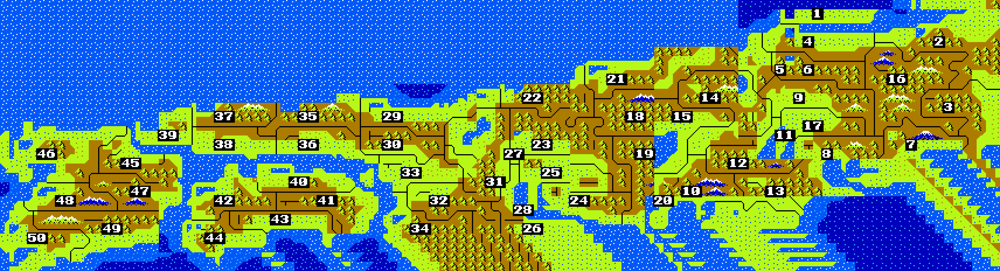

1 Ezo2 Mutsu3 Morioka4 Iwasaki5 Ugo6 Rikuzen7 Uzen8 Iwaki9 Iwashiro10 Echigo11 Hitachi12 Shimotsu13 Awa14 Musashi15 Shinano16 Noto17 Ecchu18 Hida19 Kiso20 Suruga21 Kaga22 Echizen23 Mino24 Mikawa25 Owari26 Iseshima27 Omi28 Iga29 Tango30 Tanba31 Yamashir32 Yamato33 Settsu34 Kii35 Inaba36 Harima37 Izumo38 Sanbi39 Aki40 Sanuki41 Awa42 Iyo43 Tosa44 Nakamura45 Buzen46 Chikuhi47 Bungo48 Higo49 Hiyuga50 Satuma